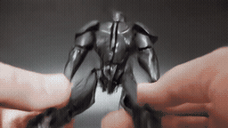
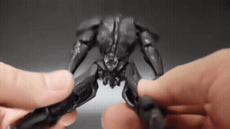
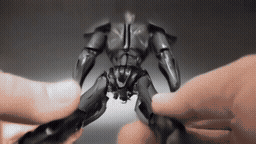

LTX Long-Context Feasibility
Addressable Global Memory for Long-Context Video Generation 연구의 Stage 1 실험 기록입니다. FineVideo의 과거 증거를 frozen LTX 2.5에 주었을 때 생성에 활용할 수 있는지, 긴 과거 전체보다 필요한 chunk를 선택하는 것이 유리한지 확인했습니다.
정식 생성 120회, 9개 실험 묶음을 완료하고 feasibility를 종료했습니다. Oracle 증거의 효용과 계산 절감은 부분적으로 확인했습니다. 학습된 압축 메모리와 자동 검색의 효과는 아직 검증하지 않았습니다.
GitHub에서 바로 결과 보기
마지막 32초 비교 · 5사례 · 전체 9개 실험 · 120회 결과
영상 파일은 이 저장소의 media/videos/에 포함되어 있습니다. 아래와 각 사례 페이지의 움직이는 미리보기는 **GIF(256×144, 8 FPS)**이며, 클릭하면 원본 MP4를 엽니다. 별도 웹서버나 GitHub Pages 설정이 필요하지 않습니다. 정밀 평가는 원본 MP4(512×288, 24 FPS)를 사용하세요.
로봇 예시 · 같은 Local과 prompt, 다른 과거 입력
| Local-only | Native-Full · 연속 32초 | Oracle-sparse · 선택 chunk |
|---|---|---|
 |
 |
 |
Oracle은 각진 helmet·금색 앞면을 손 없는 새 display와 결합했습니다. 초반 dissolve는 남아 있습니다. 실제 입력·5조건·prompt 확인
성공 사례와 함께 학생의 공동 실패, 차량의 주행 실패, 보존 작업자의 부분 노출을 확인하세요.
마지막 실험은 연속 과거 32초와 선택 chunk를 비교한 5사례 × 5조건입니다. 동일 GPU 0에서 조건마다 새 프로세스로 실행했습니다.
| 조건 | 생성기에 제공한 과거 | Video tokens | Denoising 중앙값 | Peak allocated |
|---|---|---|---|---|
| Local-only | Local 2초 | 2,304 | 2.719 s | 35.970 GiB |
| Native-Full | 연속 32초 clean prefix | 15,264 | 18.035 s | 39.016 GiB |
| Full-reference | H 30초 전체 bank + 독립 Local | 15,408 | 18.181 s | 39.049 GiB |
| Oracle-sparse | 같은 H bank에서 사람이 고른 9 latent frame + Local | 3,600 | 3.868 s | 36.276 GiB |
| Uniform-sparse | 같은 H bank의 중앙 9 latent frame + Local | 3,600 | 3.868 s | 36.276 GiB |
Oracle은 Native/Full-reference 대비 denoising이 사례별 비율 중앙값 4.66× / 4.70× 빨랐습니다. 전체 peak allocated는 약 7%, 상주 baseline 이후 증가분은 약 76% 감소했습니다. 로딩·검사·decoder 포함 실행 본체는 약 1.65×, 별도 VAE/text 준비와 실행 시간의 구성요소 합은 약 1.35× / 1.37×입니다. 마지막 수치는 단일 cold 요청의 실측이 아닙니다. Oracle도 전체 H bank 구축 비용을 지불했으며, 미구현 검색·메모리 비용은 포함하지 않았습니다. 원측정 · 비용 계산
외관 증거 활용은 직원·로봇·차량에서 명확히 개선됐고, 보존 작업자는 부분적 개선, 학생은 공동 실패였습니다. 로봇은 과거 외관과 새로운 display 구도를 결합했습니다. 직원·차량의 참조 구도 재현, 차량 주행 실패, 보존 작업자 얼굴 잘림이 남았습니다. 5개 과제의 완전 성공이나 범용 품질 우위로 해석하지 않습니다. 사례별 결과
실험 흐름
| 순서 | 질문 / 비교 | 신규 생성 | 비교에 표시하는 수 |
|---|---|---|---|
| 1 | Local 조건으로 다음 3초 생성 | 1 | 1 |
| 2 | 초기 Local / Random / Oracle | 9 | 9 |
| 3 | 이미지/영상 × Past/Target, 3 seeds | 10 | 12 |
| 4 | 이미지 반복과 시간 배치 분리 | 3 | 5 |
| 5 | 이미지 반복수 1 / 2 / 4 / 10 | 2 | 4 |
| 6 | 서로 다른 원본 5개의 Local / Image-Past | 10 | 10 |
| 7 | 5사례 전체 이미지/영상 × Past/Target + Local | 15 | 25 |
| 8 | P0 / P1 / P2 / P3 × Local / Image-Past / Video-Past | 45 | 60 |
| 9 | 연속 32초 / 전체 참조 / 선택 chunk | 25 | 25 |
| 합계 | 재사용 31개는 신규 생성에 중복 집계하지 않음 | 120 | 151 |
읽는 순서
- 입력 방식과 통제: Local이 생성 조건인 이유, 별도 참조 token, 시간 좌표, IC-LoRA 사용 여부.
- 품질·비용 결과와 한계: 성공과 실패, 메모리 감소 해석, 보조 DINO의 제한.
- 재현·검증: 저장 결과 검증, 원실행 코드·설정·환경, GPU 재실행의 요구 사항.
- 데이터·산출물 출처: 실제 입력과 단순 표시 영상의 차이, 포함·별도 보관 범위.
- Stage 2로 넘길 사항: 압축 전역 메모리의 두 역할과 분리 평가.
연구 목표와 현재 경계
긴 영상에서 학습한 압축 전역 메모리는 전역 문맥을 직접 생성에 제공하면서 원본 증거의 위치도 선택해야 합니다. 배경·물체·사람 모두가 필요한 정보일 수 있으므로 피사체 추출이나 배경 제거를 기본 경로로 두지 않습니다. 후속 과제에는 상태·사건·복수의 과거 구간 의존성이 포함됩니다.
현재 결과는 선택된 소수 원본의 외관·시점 전환 진단입니다. Attention 기전 측정, 학습된 메모리, 자동 검색, 상태·사건 평가, 길이 scaling은 미실행입니다. Stage 2는 초기 설계만 있으며 구현·학습은 시작하지 않았습니다.
원실험 코드와 기록은 재현 자료로 보존했습니다. 이 저장소를 정리하면서 새 영상을 생성하거나 이전 실험 설정을 바꾸지 않았습니다. 원자료 및 모델의 권리와 이용 조건은 각 제공자에게 있습니다. 출처